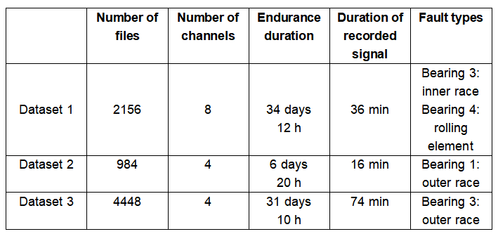
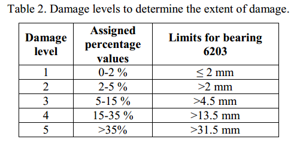

Case western reserve university (CWRU) bearing dataset
Dataset overview
This is a well-known dataset in the field of bearing fault diagnosis, with experimental data
from the CWRU bearing data center. The test bench and dataset are described below.
Bench information
The bench for the CWRU dataset consists of a 2 hp motor, a torque transducer/translator, a
dynamometer, and an electronic controller. An acceleration sensor is placed at the fan end
of the motor housing and at the drive end to collect the acceleration signal from the
bearings. A 16-channel data logger collects the vibration signals. To quantify the influence
of fault location on the bearing vibration response, the outer ring fault was placed at
three different locations, at 3 o'clock (directly in the load zone), 6 o'clock (orthogonal
to the load zone), and 12 o'clock.

Characteristics of tested bearings
There are two types of bearings on the bench, the bearing SKF-6205-2RS JEM located at the
drive end with sampling frequencies of 12 kHz and 48 kHz, and the bearing SKF-6203-2RS JEM
located at the fan end with the sampling frequency of 12 kHz. The specific parameters of the
two types of bearings are shown in Tables 1 and 2 [2].
Operating conditions
The data from CWRU dataset is the acceleration signal of a bearing fault with three single
points (inner ring fault, outer ring fault, and rolling element fault). There are four fault
diameters, 0.007 inches, 0.014 inches, 0.021 inches, and 0.028 inches, respectively. The
damage to the bearings is introduced by electro-discharge machining (EDM), so this dataset
can only be used for fault diagnosis rather than RUL prediction. The bearings in each
condition are also operated at 0 hp, 1 hp, 2 hp, and 3 hp load, corresponding to motor
speeds of 1797 rpm, 1772 rpm, 1750 rpm, and 1730 rpm. Table 3 lists the four operating
conditions. Tables 4-7 present the details of the four operating conditions.

Reference
[1] Wade A Smith and Robert B Randall. Rolling element bearing diagnostics using
the case western reserve university data: A benchmark study. Mechanical systems
and signal processing, 64:100-131, 2015.
[2] HAKAN ÇALIS, ABDÜLKADIR Cakir, and Emre Dandil. Artificial immunity- ˙ based induction motor bearing fault diagnosis. Turkish Journal of Electrical Engineering and Computer Sciences, 21(1):1-25, 2013.
[3] Case Western Reserve University. Case Western Reserve University Bearing Data Center Website. http://csegroups.case.edu/bearingdatacenter/home. Oct. 2016.
[2] HAKAN ÇALIS, ABDÜLKADIR Cakir, and Emre Dandil. Artificial immunity- ˙ based induction motor bearing fault diagnosis. Turkish Journal of Electrical Engineering and Computer Sciences, 21(1):1-25, 2013.
[3] Case Western Reserve University. Case Western Reserve University Bearing Data Center Website. http://csegroups.case.edu/bearingdatacenter/home. Oct. 2016.
Intelligent maintenance system (IMS) bearing dataset
Dataset overview
The IMS bearing dataset is from the Center for IMS in the University of Cincinnati and
consists of three run-to-failure experiments on a loaded shaft [1]. The data are obtained by
conducting endurance tests of natural degradation [2].
Bench information
Figure 1 shows the bearing test bench of IMS, which mainly consists of an AC motor, a loaded
shaft, four roller bearings, a thermocouple, and accelerometers. In the first experiment,
there are vertical and horizontal accelerometers in the housing of each bearing, which means
that the vertical and horizontal acceleration signals of each bearing were recorded. And in
the other two experiments, there is only one accelerometer in the housing of each bearing.

Characteristics of tested bearings
The parameters of the four bearings (Rexnord ZA-2115) are given in Table 1.
Vibration signals
The sampling frequency is 20 kHz, and 1 second is acquired every 10 minutes, recording 20480
samples per second.
Operating conditions
Table 2 lists detailed information on the IMS datasets. Datasets 1, 2, and 3 represent three
experiments, respectively. The first dataset includes the acceleration signals of the
bearings in the vertical and horizontal directions. The second and third datasets only
collected acceleration signals in the horizontal direction.

Reference
[1] J Lee, H Qiu, G Yu, Ja Lin, et al. Bearing data set. IMS, University of Cincinnati, NASA
Ames Prognostics Data Repository, Rexnord Technical Services, 2007.
[2] William Gousseau et al. "Analysis of the Rolling Element Bearing data set of the Center for Intelligent Maintenance Systems of the University of Cincinnati". In: CM2016. 2016.
[3] Hai Qiu, Jay Lee, Jing Lin. “Wavelet Filter-based Weak Signature Detection Method and its Application on Roller Bearing Prognostics.” Journal of Sound and Vibration 289 (2006) 1066-1090.
[2] William Gousseau et al. "Analysis of the Rolling Element Bearing data set of the Center for Intelligent Maintenance Systems of the University of Cincinnati". In: CM2016. 2016.
[3] Hai Qiu, Jay Lee, Jing Lin. “Wavelet Filter-based Weak Signature Detection Method and its Application on Roller Bearing Prognostics.” Journal of Sound and Vibration 289 (2006) 1066-1090.
FEMTO-ST Dataset
Dataset overview
The challenge datasets were provided by FEMTO-ST Institute. All data can be used for bearing
remaining useful life prediction.
Bench information
Experiments were carried out on a laboratory experimental platform (PRONOSTIA) that enables
accelerated degradation of bearings under constant and/or variable operating conditions,
while gathering online health monitoring data (rotating speed, load force, temperature,
vibration). [1]

Characteristics of tested bearings
o Fitted with two synthetic rubb er seals to prevent leakage of lubricant as
well as entry
of dust, water and other harmful material
o Outside Race Diameter D=32 mm
o Inside Diameter d=20 mm
o Thickness B=7 mm
o Load Ratings Static: 2470 N
o Load Ratings Dynamic: 4000 N
o Maximum Speed : 13000 rpm [1]
o Outside Race Diameter D=32 mm
o Inside Diameter d=20 mm
o Thickness B=7 mm
o Load Ratings Static: 2470 N
o Load Ratings Dynamic: 4000 N
o Maximum Speed : 13000 rpm [1]
Vibration signals
o Vibration signals (horizontal and vertical)
o Sampling frequency: 25.6 kHz
o Recordings: 2560 samples (i.e. 1/10 s) are recorded each 10 seconds [1]
o Sampling frequency: 25.6 kHz
o Recordings: 2560 samples (i.e. 1/10 s) are recorded each 10 seconds [1]
Temperature signal
o Temp erature signals
o Sampling frequency: 10 Hz
o Recordings: 600 samples are recorded each minute
o Sampling frequency: 10 Hz
o Recordings: 600 samples are recorded each minute
Characteristics of the temperature sensor
Temperature sensor Type platinum RTD PT100 PROSENSOR
o Class 1/3 DIN norm IEC 751
o Nominal resistance : 100 ohms
o Usage range : -200 to +600 °C
o Diameter : 2.8 mm
o Length : 25 mm
o Class 1/3 DIN norm IEC 751
o Nominal resistance : 100 ohms
o Usage range : -200 to +600 °C
o Diameter : 2.8 mm
o Length : 25 mm
Operating conditions
o Conditions 1: First op erating condi tions: 1800 rpm and 4000 N;
o Conditions 2: Second op erating condi tions: 1650 rpm and 4200 N;
o Conditions 3: Third op erating cond itions: 1500 rpm and 5000 N
o Conditions 2: Second op erating condi tions: 1650 rpm and 4200 N;
o Conditions 3: Third op erating cond itions: 1500 rpm and 5000 N
Reference
[1] Lessmeier C, Kimotho J K, Zimmer D, et al. Condition monitoring of bearing damage in
electromechanical drive systems by using motor current signals of electric motors: A
benchmark data set for data-driven classification[C]//PHM Society European Conference. 2016,
3(1).
Paderborn Bearing Datasets
Dataset overview
The Paderborn bearing dataset was designed and provided by the Paderborn University. The
data set contains a total of 128 sets of experimental data for 32 bearings under 4 working
conditions. All of the data can be used for bearing fault diagnosis. Generating Real Bearing
Damage data enables remaining useful life prediction.
Bench information
Artificial damage and healthy (undamaged) bearings
The test rig consists of several modules: an electric motor (1), a torque-measurement shaft
(2), a rolling bearing test module (3), a flywheel (4) and a load motor (5).
The motor (1) is a 425 W Permanent Magnet Synchronous Motor (PMSM) with a nominal torque of T = 1.35 Nm, a nominal speed of n = 3,000 rpm, a nominal current of I = 2.3 A and a pole pair number p = 4 (Type SD4CDu8S-009, Hanning Elektro-Werke GmbH & Co. KG). It is operated by a frequency inverter (KEB Combivert 07F5E 1D-2B0A) with a switching frequency of 16 kHz. [1]
The motor (1) is a 425 W Permanent Magnet Synchronous Motor (PMSM) with a nominal torque of T = 1.35 Nm, a nominal speed of n = 3,000 rpm, a nominal current of I = 2.3 A and a pole pair number p = 4 (Type SD4CDu8S-009, Hanning Elektro-Werke GmbH & Co. KG). It is operated by a frequency inverter (KEB Combivert 07F5E 1D-2B0A) with a switching frequency of 16 kHz. [1]
Generating real bearing damage
Apparatus for accelerated life time test.
Bearing parameters and category of bearing damage
Operating conditions
Data collection
Sampling rate
Vibration signal: 64kHz
Mechanical signal: 4kHz
Temperature signal: 1Hz
Motor current signal: 64kHz
Mechanical signal: 4kHz
Temperature signal: 1Hz
Motor current signal: 64kHz
Data introduction
Artificial damage
Healthy (undamaged) bearings
Generating real bearing damage
Damage levels to determine the extent of damage

Reference
[1] Patrick Nectoux, Rafael Gouriveau, Kamal Medjaher, Emmanuel Ramasso, Brigitte Morello,
Nourredine Zerhouni, Christophe Varnier. PRONOSTIA: An Experimental Platform for Bearings
Accelarated Life Test. IEEE International Conference on Prognostics and Health Management,
Denver, CO, USA, 2012.
XJTU-SY Bearing Datasets
Dataset overview
XJTU-SY bearing datasets are provided by the Institute of Design Science and Basic
Component at Xi'an Jiaotong University (XJTU), Shaanxi, P.R. China and the Changxing
Sumyoung Technology Co., Ltd. (SY), Zhejiang, P.R. China. The datasets
contain complete run-to-failure data of 15 rolling element bearings that were acquired
by conducting many accelerated degradation experiments.
Dataset introduction
Bearing testbed
Figure shows this bearing testbed, a record of degradation data throughout the
entire aging cycle of the bearing. The bearing test bench is mainly composed of an
alternating current (AC) motor, a digital force display, a motor speed controller, a tested
bearing, a hydraulic loading, support bearings and accelerometers.
Tested bearing
The type of tested bearings is LDK UER204. and the detailed parameters are given.
Operating condition
A total of 3 different operating conditions were set in the accelerated degradation
experiments:
1) 2100 rpm (35 Hz) and 12 kN;
2) 2250 rpm (37.5 Hz) and 11 kN;
3) 2400 rpm (40 Hz) and 10 kN.
1) 2100 rpm (35 Hz) and 12 kN;
2) 2250 rpm (37.5 Hz) and 11 kN;
3) 2400 rpm (40 Hz) and 10 kN.
Sampling setting
To collect run-to-failure data from the bearings, two PCB 352C33 accelerometers are placed
on the housing of the bearings being tested. The accelerometers are positioned at 90° to
each other, that is, one is placed on the vertical axis and the other is placed on the
horizontal axis. The sampling frequency is 25.6kHz to record 32 768 samples (i.e., 1.28 s)
every 1 minute.
Dataset details
Table lists the detailed information of each tested bearing, including number of CSV files,
bearing lifetime and fault element.